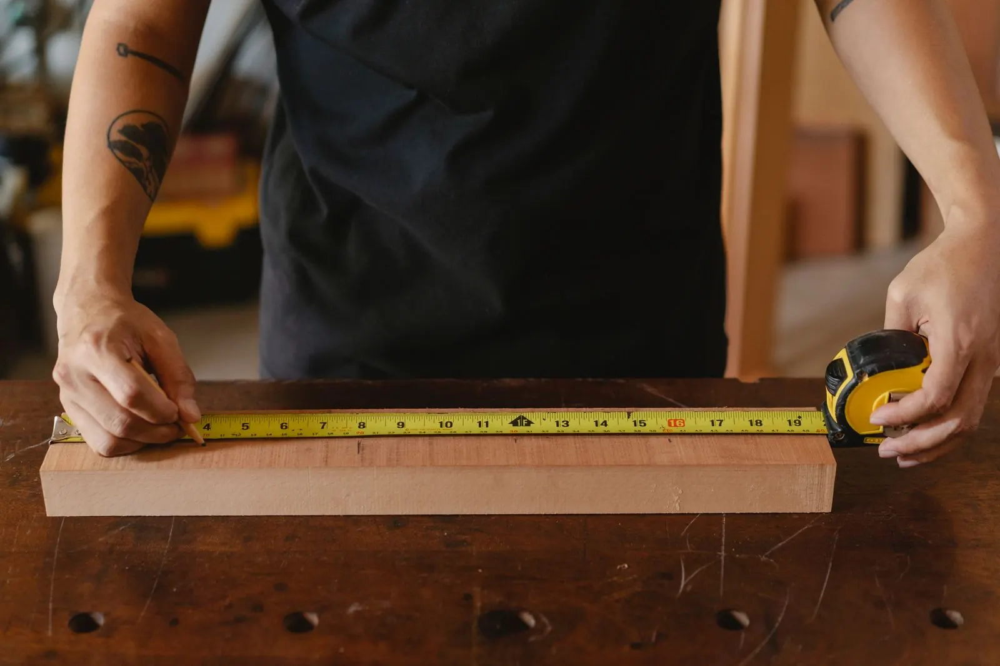
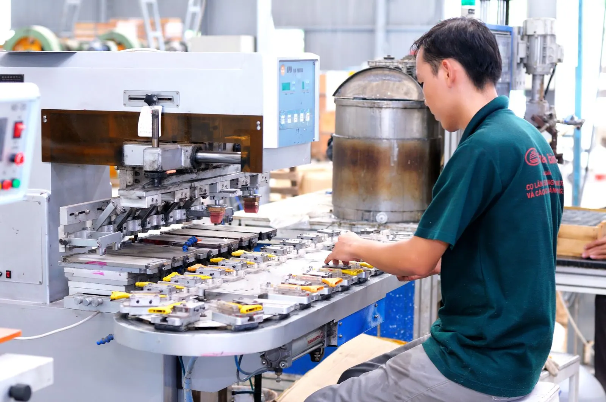

Why Homworks
Every detail is checked, so you don’t have to
Surface inspection under calibrated light. Because, every single detail matters.
- 100+point quality check
- 30days from sign-off*
- 10 yearswarranty
- 16questions to ask any designer
Why choose Homworks
Homworks checks every raw material before it reaches your home, pairs AI-driven design software with skilled workmanship, and builds in its own factory to a 10-year warranty.
From premium hardwood selection to advanced moisture resistance, your home is built to outlast trends - and withstand the test of time.
- 100+point quality check before handover
- 72 hrsboiling-water test on BWP-grade plywood
- 30days from design sign-off*
- 10 yearswarranty on every project
What sets us apart
Built to outlast trends.
We subject every raw material to a rigorous quality control mandate before it reaches your home.

Factory-made, fine finish
AI-supported design software and skilled workmanship for a flawless, factory-precise finish.
Unlimited choice
A wide range of designs, colours and finishing options for every room in your home.
10-year warranty, real after-sales
Every project is backed by our warranty and prompt after-sales service.
Superior, strong material
Selected hardwood core and face veneers, chosen for wear and damage resistance.
High screw-holding ability
High-density hardwood species give every joint exceptional holding strength.
Fungus & termite resistant
Treated against fungus, borer and termite, for interiors that are built to last.
Moisture resistant, precisely made
Moisture-resistant materials with precision-engineered dimensions – no room for error.
The process
The seamless Homworks process
A clear step-by-step path to a beautifully designed home.
GET
- Meet your designer
- Requirement gathering
- Initial design
- Booking advance
- Site measurement
SET
- 3D model + Quality check
- Design freeze
- BOM + Production drawings
- Site validation
- Final sign-off
GO
- Execution begins
- Factory production
- Site readiness
- Dispatch & delivery
- Installation, QC, Handover

Leave the checking to us.
Every raw material meets a rigorous quality control mandate before it reaches your home.
The Interior Guide
16 key questions you need to ask.
Your home’s quality and longevity will depend on the answers. Consider these points before you choose any interior designer – including us.
The board inside your cabinet decides how long it lasts. The Homworks standard: ISI-certified BWP / HDHMR E0 double-side post-laminated boards are used as the core material in every carcass.
Kitchens and bathrooms are damp, hot and wet places. The Homworks standard: Every BWP-grade plywood is tested in boiling water for 72 hours, with results recorded before it is used in projects.
What your furniture is made of is part of the air at home. The Homworks standard: Core boards are E0 grade, with no formaldehyde, in all carcasses.
Certificates and test records are how you check a promise. The Homworks standard: ISI-certified boards, and an in-house material testing lab at our factory. Each material is tested twice: when it reaches the factory and when it is issued to a project. We can provide tested samples of the core materials.
Edge bands protect the core board from water and wear. The Homworks standard: Edge-banding on advanced IMA machines with PUR hot-melt glue. “Peel-off” tests every 2 hours on the lines, with edge strength above 7 Newtons.
Different parts of your furniture need different bonding systems. The Homworks standard: Henkel D3 adhesive for laminate pressing, and PUR hot-melt glue for machine edge-banding and specified lamination – ideal for high-temperature environments like kitchens, withstanding up to 80° C.
Hinges, runners and dowels do the moving and the holding. The Homworks standard: A drawer and shutter cycle test for the durability of runners and hinges, and a compression test for the strength of the board and the load-bearing capacity of the dowel.
How a cabinet box is built decides how it carries weight and how it can be repaired. The Homworks standard: A double-carcass system on every project, so a single unit can be replaced easily without disturbing the other cabinets.
Surface finishes need to cope with daily wear. The Homworks standard: A scratch-resistance test on acrylics, laminates and foils. Acrylic is passed through the flat lamination line with PUR hot-melt glue, with an ABS backer of the same thickness and density on the back of the board.
Where your furniture is made decides how precise it is. The Homworks standard: Our own manufacturing facility with CNC and flat-lamination machinery imported from Italy and Germany. Site carpentry is kept for fillers, end panels and visible panels.
Furniture has to carry real loads for years. The Homworks standard: A vertical force test for the load-bearing capacity of a panel, and a leg-strength test to find the breaking point of the leg.
Walls hold dampness, and cabinets should not touch it. The Homworks standard: An 18mm gap between the wall and the carcass keeps the core materials away from wall dampness, so the product lasts longer.
The finish is what you see and touch every day. The Homworks standard: Lamination, membrane, acrylic and PU paint, in a wide range of designs, colours and finishing options for every room in your home.
Factory-made does not have to mean standard-sized. The Homworks standard: Furniture is designed around your room dimensions, storage needs and chosen finishes, with the design and measurements confirmed before production.
How you are quoted decides how clear the cost is. The Homworks standard: Module-wise pricing, so the quotation is as close as possible to the final cost.
A project should be checked before it reaches your home. The Homworks standard: Every project goes through our quality checks before handover, backed by our in-house testing lab and 10-year warranty.
In short
The whole page, at a glance.
Everything you have just read, in one place. Tap any card to jump back to it.
Quality you can see. Care you can count on.
Call for a free design and see how the Homworks process feels different.